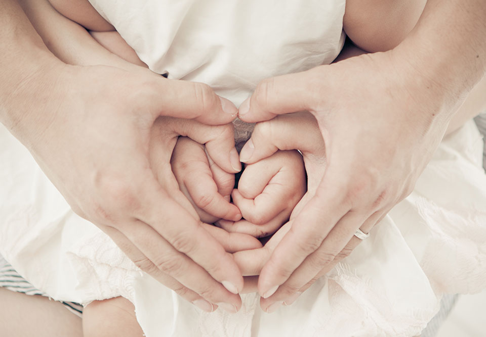

Photograph of a family is a memory of our life. From grandparents to parents, children to cousins, we want to remember everyone. We build a great bond, but as part of the experience, we depart. The photographs are going to help us in reliving the past and cherish the memories.
Life is so fast. We are busy building our futures. When there is an addition to the family, we are thrilled. But as we are into our busy schedule, and at the blink of an eye, their tiny little feet walk towards you to wake you up early in the morning. We feel like it’s just an overnight and they start packing their bags. We at our studio in Brisbane will make a memory with your baby photography.
May it be the engagement or marriage, may it be the baby shower or the tiny little first step, may it be a new pet welcome or the first day at school, to remember and relive these moments and all the milestones, photographs play a significant role.
Pictures bring us back to our legacy, and they are a great way to ponder the memories. You can’t go back in the past and bring back the family, but pictures do. You may not be together now, but the smiles and the laughter in pics will fill your heart.
And when it comes to newborn photography, it’s a treasure one is going to enjoy throughout the life. The newlyweds, first time going to be parents, are going through life experience. The early pregnancy goes through a lot of first-time changes — these beautiful moments, the growing bulge of a mother’s womb, what a delightful sight.
The newborn is delicate and is a lifetime event. And if it is for the first time, then this is a moment not to miss. From the womb to the outside world, each moment to cherish, and should be captured. It will be a surprising treat for the kid when he grows up. With our professionals in-studio at Brisbane, we will arrange everything from costumes to different backgrounds for the newborn photography event.
Maternity photography is a treasure for first-time parents. Maternity photography is a distressing activity for the young couple who are now getting prepared for the new commitment.
No one is going to be there always. One day, only pictures will be there. Make sure you are there. These are the memories for others. Let them cherish the memories of them. You don’t take a photograph, and you make it. It is the memory of what you wanted to say, in your eyes. Photographs store emotions and feelings in them.

It is with your young baby who do not understand instructions. The baby cannot artificially give the best poses or facial expressions. The photography experts have to wait for the best moments to capture. The family photography with a range of costumes and props present in the Brisbane studio is a session full of love and happiness. What all you have to bring to the studio is happiness and of course your child’s favourite toy which cannot be replaced by anything.

We guarantee you an enjoyable experience, in a comfortable and soothing environment, that will allow you to relax. In our Brisbane studio, we will capture your family photography for special moments. Different themes of the perfect backdrop to creating your beautiful baby portraits, oh wow what an experience. Photographs make the best gift; may you frame it or make into posters. You’ll cherish your memories through these clicks.

Capturing the stages and memories of life is fun. May it be your pregnancy or the newborn, and all the precious moment of life with your kids. Enjoy a photo-shoot with your family and enjoy the memories forever, with the help of an expert professional. In the coming years, we look back and enjoy on the fun and delightful memories of the past with family photography. Your life is a train, take photographs as a return ticket, to the events and milestones which have passed. Sometimes, you will not understand the value of a moment in your life until it becomes a memory.
Our Brisbane studio, with experts and professionals will provide you with the costumes, backdrops and everything required for your family photography. Cherish the memories and capture the milestones in your life, may it be the bulging belly or the new-borns smile. Just give us a chance to preserve your memories and events.
With us, you don’t have to worry.